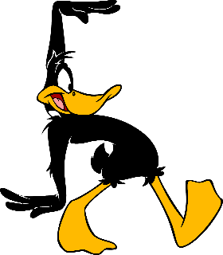
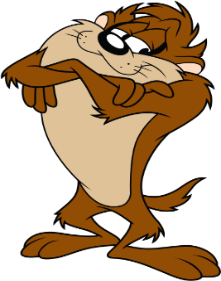
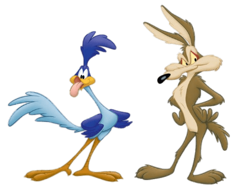
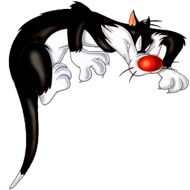
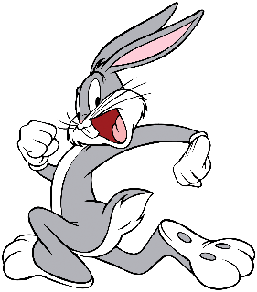

Animated short films produced by the Warner Brothers studios beginning in 1930
Looney Tunes is an American animated comedy short film series produced and distributed by Warner Bros. The series originally ran from 1930 to 1969, concurrently with its partner series Merrie Melodies, during the golden age of American animation.
Following a revival in the late 1970s, new shorts were released as recently as 2014. The two series introduced a large cast of characters, including Bugs Bunny, Daffy Duck, and Porky Pig. The term Looney Tunes has since been expanded to also refer to the characters themselves.
Looney Tunes and Merrie Melodies were initially produced by Leon Schlesinger and animators Hugh Harman and Rudolf Ising from 1930 to 1933.Schlesinger assumed full production from 1933 until he sold his studio to Warner Bros. in 1944, after which it was renamed Warner Bros. Cartoons.
The Looney Tunes title was inspired by that of Walt Disney's Silly Symphonies. The shorts initially showcased musical compositions owned by Warner's music publishing interests through the adventures of such characters as Bosko and Buddy. Porky Pig and Daffy Duck became the featured Looney Tunes characters, while Merrie Melodies featured one-shot cartoons and minor recurring characters.
Looney Tunes Characters
Bugs Bunny is a fictional character created in the late 1930s
Bugs is best known for his featured roles in the Looney Tunes and Merrie Melodies series of animated short films, produced by Warner Bros. Earlier iterations of the character first appeared in Ben Hardaway's Porky's Hare Hunt (1938) and subsequent shorts before Bugs's definitive characterization debuted in Tex Avery's A Wild Hare (1940). Bob Givens, Chuck Jones and Robert McKimson are credited for defining Bugs's design.
Daffy Duck is a fictional character created by animators Tex Avery and Bob Clampett
Styled as an anthropomorphic black duck, he has appeared in cartoon series such as Looney Tunes and Merrie Melodies, in which he is usually depicted as a foil for either Bugs Bunny, Porky Pig or Speedy Gonzales. He was one of the first of the new screwball characters that emerged in the late 1930s to replace traditional everyman characters who were more popular earlier in the decade, such as Mickey Mouse, Porky Pig, and Popeye.
An animated cartoon character featured in the Warner Bros. Looney Tunes and Merrie Melodies series of cartoons
Taz is generally portrayed as a ferocious, albeit dim-witted, carnivore with a notoriously short temper and little patience. He got his name in the short Ducking the Devil, where he is described as a "vicious, evil-tempered brute with jaws like a steel trap". Though he can be very devious, he is also sweet at times. His enormous appetite seems to know no bounds, as he will eat anything in his path
Wile E. Coyote and the Road Runner are a duo of cartoon characters from the Looney Tunes and Merrie Melodies
In each episode, the cunning, devious and constantly hungry coyote repeatedly attempts to catch and subsequently eat the Road Runner, but is successful in catching the Road Runner on only extremely rare occasions. Instead of his animal instincts, the coyote uses absurdly complex contraptions to try to catch his prey, which comically backfire, with the coyote often getting injured in slapstick fashion
Tweety is a yellow canary in the Warner Bros. Looney Tunes and Merrie Melodies series of animated cartoons
The name "Tweety" is a play on words, as it originally meant "sweetie", along with "tweet" being an English onomatopoeia for the sounds of birds. His characteristics are based on Red Skelton's famous "Junior the Mean Widdle Kid." He appeared in 46 cartoons during the golden age, made between 1942 and 1964. Despite the perceptions that people may hold, owing to the long eyelashes and high-pitched voice (which Mel Blanc provided), Tweety is male although his ambiguity was played with
Yosemite Sam is a cartoon character in the Looney Tunes and Merrie Melodies series of short films produced by Warner Bros
His name is taken from Yosemite National Park in California. He is an adversary of Bugs Bunny and his archenemy alongside Elmer Fudd. He is commonly depicted as a mean-spirited and extremely aggressive, gunslinging outlaw or cowboy with a hair-trigger temper and an intense hatred of rabbits, Bugs in particular. In cartoons with non-Western themes, he uses various aliases, including "Chilkoot Sam" (named for the Chilkoot Trail), and many others
My favourite characters
Those ones whom I liked when I was a child





Who is the oldest Looney Tune?
The Warner Bros. cartoon studio was founded in 1929 by Hugh Harman and Rudolph Ising, friends of Walt Disney. The first Looney Tunes character created was Bosko, sort of a human version of Mickey Mouse who wore a bowler hat and had a falsetto voice. Bosko made his debut May 6, 1930, in “Sinkin' in the Bathtub.”